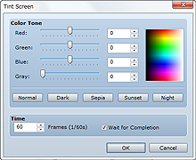
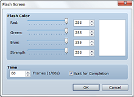
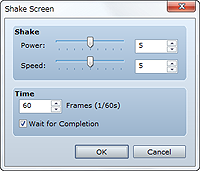

Performs a screen fadeout (gradually turns the screen black). There are no settings to be made for this command.
• The fadeout state continues until the Fadein Screen event command is executed.
• Menus, the message window, and the battle command window are among the UI elements that will still be displayed during a fadeout.
• When this command is run in a battle event, everything except for the command window and messages will be blacked out, and the player will not be able to see enemies and other onscreen elements.
Returns a screen blacked out by Fadeout Screen to its original state. There are no settings to be made for this command.

Changes the overall screen color. The color of the message window and pictures will not be changed.
Adjust the color tone (-255 to 255) for Red, Green, and Blue. Use Gray to set the intensity (0 to 255) of the grayscale filter. The higher the value, the greater the overall strength of the color. You can also click the Normal, Dark, Sepia, Dusk, and Night buttons at the bottom of the dialog box to apply the standard values for the tones represented by their respective names. The Normal button reverts to the original color tone. You can check color tone changes in the preview area on the right side of the dialog box.
Specify the time to spend on processing in frames (1 to 600). One frame is equivalent to 1/60 of a second.
When this option is selected, processing stops until this command is finished running.
• The change in color tone is active until it is changed again by this command, even during combat.

Fills the entire screen with the specified color for an instant, and then gradually reverts to the original color. This allows you to represent a flash of lightning, etc.
Use the Red, Green, and Blue slider bars (0 to 255) to specify the color to flash. You can check the color you specified in the preview area on the right side of the dialog box. Use Strength to specify the color's opacity (0 to 255). Setting "0" makes the color completely transparent, rendering it invisible on screen.
Specify the time processing continues in frames (1 to 600). One frame is equivalent to 1/60 of a second.
When this option is selected, processing stops until this command is finished running.

Shakes the entire screen left and right.
In Power, specify the intensity (1 to 9) of the shaking, and in Speed, specify how fast (1 to 9) the screen will shake.
Specify the time processing continues in frames (1 to 600). One frame is equivalent to 1/60 of a second.
When this option is selected, processing stops until this command is finished running.